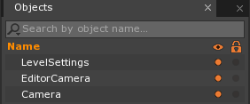
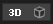
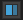
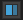
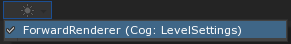
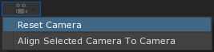
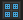

Level
A level is resource that stores a set of objects which will then be created later when the level is loaded. Levels can be loaded into a space in order to create all objects saved to the resource. Levels can be edited using several tools, especially those found via the Editor UI.
Common Uses
- Holding objects to create playable game levels and menus
Using Levels
Creating a Level
A new level can be added by using the Add command (Command : Add or clicking on the Add button) followed by selecting Level. The newly-created level will open in the Level Window and allow for the manipulation of objects to build game levels. At creation the level will only have the default objects inside it: LevelSettings, EditorCamera and Camera.

- The
LevelSettingsobject is a cog that has a single unique instance per level that cannot be deleted or duplicated. It has several components attached in order to run various effects in the level, such as gravity. More information can be found in the Level Settings Manual page. - The
CameraandEditorCameraobjects are used by the engine to render the game level on screen, either at runtime or in editor, respectively. More information on cameras in general can be found in the Cameras, Viewports and Renderers Manual page.
The background grid will also be turned on. The grid is there to help place objects within the level editor but will not be visible during gameplay, and can be turned on and off by using the toolbar in the top left corner of the Level Window.
| The collapsible toolbar has a few buttons for altering the view. | |
|---|---|
 /  |
Toggles between 2D & 3D camera controls. |
 /  /  |
Toggles the editor camera’s rendering mode between Orthographic and Perspective Projection. |
 |
Allows previewing of the game using the graphical setting of the actual game renderers. This can allow you to preview shadows you may have set up that wouldn’t show until you start running the game. |
|  | With the camera options you can either reset the editor camera to its default settings, or align a selected camera with the editor’s camera. |
 /  |
Toggles the grid line visuals in the editor. |
 /
/ 
Levels vs. Spaces
While levels are resources that store object data to later be loaded, spaces are where those objects are placed upon creation. This allows multiple spaces to load multiple levels at once, which is used to create HUD or UI elements, or to pause the main game while still allowing pause menus to function properly.
// The level made will all the Pause Menu UI elements
[Property]
var PauseLevel : Level;
// An property to hold a Space archetype used to create the Pause level
[Property]
var PauseSpaceArchetype : Archetype;
// A variable used as reference for the Space holding the pause menu
var PauseSpace : Space = null;
function Initialize(init : CogInitializer)
{
}
function Pause()
{
// Create a new named Space for the Pause Menu
this.PauseSpace = this.GameSession.CreateNamedSpace("PauseSpace", this.PauseSpaceArchetype);
// Load the Pause Menu level in the newly created Space
this.PauseSpace.LoadLevel(this.PauseLevel);
}
function UnPause()
{
// If the PauseSpace exists, destroy it along with the Pause level
if (this.PauseSpace != null)
this.PauseSpace.Destroy();
}
This code snippet gives an example of having two levels exist at once. By giving it a Space archetype and level to load and then calling the Pause() function in a ZilchScript, it will create a new Space and load the new level without destroying the currently existing one. The Unpause() function will do the reverse, and destroy the level and Space.